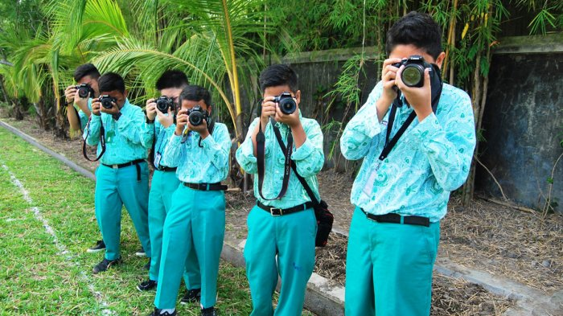

Ekstakulikuler
NekPang
NekPang atau Nekoma Jepang adalah tempat bagi siswa yang tertarik untuk mempelajari bahasa dan budaya Jepang. Klub ini menawarkan berbagai kegiatan, mulai dari kelas bahasa hingga diskusi tentang tradisi dan kebiasaan Jepang. Dengan bimbingan guru yang berpengalaman, anggota klub berlatih berbicara, mendengarkan, membaca, dan menulis dalam bahasa Jepang, sambil memperkaya pemahaman mereka tentang budaya Jepang.

NEGRAPHY
NEGRAPHY (Nekoma Photography) di Nekoma High School adalah wadah bagi siswa yang memiliki minat dalam seni fotografi. Klub ini menyediakan kesempatan bagi anggota untuk belajar tentang teknik dasar fotografi, pengeditan foto, dan cara mengekspresikan diri melalui gambar. Selain fokus pada keterampilan teknis, Klub Fotografi juga mendorong kreativitas dan kolaborasi antar anggota. Melalui kegiatan ini, siswa tidak hanya belajar untuk mengambil foto yang menarik, tetapi juga membangun kepercayaan diri dan jaringan persahabatan yang kuat.